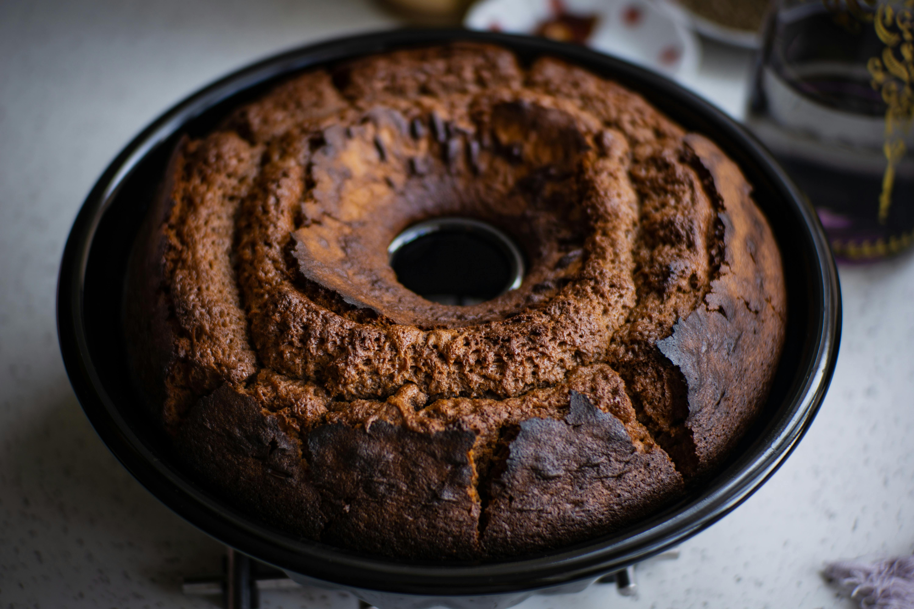

Bolo de Chocolate de liquidificador

ingredientes
Massa
- 1 xícara (chá) de leite morno
- 4 colheres (sopa) de margarina derretida
- 1 xícara (chá) de chocolate em pó
- 1 colher (sopa) de fermento químico em pó
- 3 ovos
- 2 xícaras (chá) de açúcar
- 2 xícaras (chá) de farinha de trigo
Cobrertura
- 1 xícara (chá) de açúcar
- 5 colheres (sopa) de chocolate em pó
- 3 colheres (sopa) de margarina ou manteiga
- 3 colheres (sopa) de amido de milho
- 1 xícara (chá) de água
- 1 colher (chá) de essência de baunilha
Modo de preparo
Massa
- Bata bem todos os ingredientes da massa (menos o fermento) no liquidificador, aproximadamente 2 a 3 minutos.
- Acrescente o fermento e bata por mais uns 15 segundos.
- Coloque em uma forma redonda, untada com manteiga e polvilhada com farinha de trigo.
- Asse por cerca de 40 minutos em forno médio (180º C), preaquecido.
Cobertura
- Leve todos os ingredientes ao fogo até engrossar, em ponto de brigadeiro.
- Cubra o bolo em seguida.